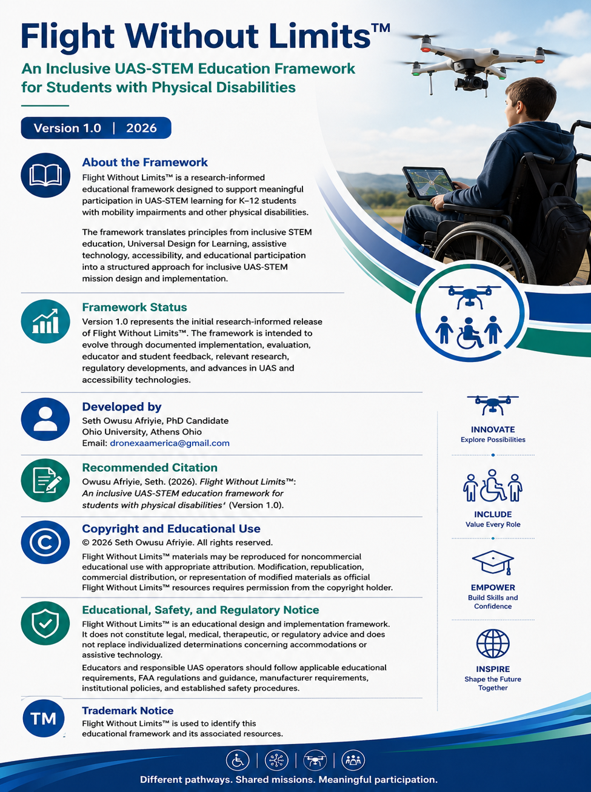

Accessibility by Design
Consider access during planning rather than only after barriers appear.
Framework in Development
An inclusive UAS-STEM framework being developed to support meaningful participation of students with mobility impairments and other physical accessibility needs in drone-integrated learning.
Purpose & Rationale

Flight Without Limits™ is designed around the principle that meaningful participation in drone-integrated STEM learning should not depend on one narrow mode of physical interaction. The framework focuses on how learning environments, mission roles, equipment arrangements, instructional materials, pacing, communication, and assistive supports can be structured so that more students can contribute authentically to UAS-STEM activities.
The framework is not intended to create a separate or simplified curriculum. Its purpose is to preserve rigorous learning goals while providing multiple pathways for access, contribution, decision-making, and demonstration of learning.
Seven Design Principles
Consider access during planning rather than only after barriers appear.
Move from presence to participation to authentic contribution within the mission.
Create varied ways for students to engage across planning, programming, operations, data, and communication.
Improve access while maintaining the intended STEM learning goals and expectations.
Build from student strengths, preferences, and opportunities for decision-making.
Use assistive technology, accessibility features, and adaptations when they improve participation.
Structure missions so that multiple roles contribute meaningfully to shared outcomes.
From Presence to Meaningful Participation
Flight Without Limits™ emphasizes progression toward authentic contribution to the mission and meaningful engagement with the intended learning.
The student is physically or virtually present during the drone-integrated learning experience.
The student performs a task or assumes a role connected to the learning experience.
The student performs a substantive role that contributes to the mission, supports the learning objectives, and provides an authentic opportunity to demonstrate knowledge or skills.
The goal is not simply to include students in a drone activity, but to design multiple pathways through which they can contribute meaningfully while preserving the intended learning and academic rigor.
Student UAS Mission Roles
A drone mission can include multiple authentic responsibilities. Flight Without Limits™ uses role diversity to broaden access while preserving the integrity of the learning experience.
Accessibility & Adaptation
Consider space, pathways, surfaces, positioning, and access to the mission area.
Arrange controllers, displays, tables, launch areas, and other tools for practical access.
Examine how students interact with controllers, software, programming interfaces, and other inputs.
Provide accessible directions, mission briefs, diagrams, checklists, and supporting content.
Structure clear communication pathways among team members during planning and operations.
Allow appropriate timing and sequencing without weakening the learning objective.
Align responsibilities with meaningful contribution and mission interdependence.
Use multiple valid ways for students to demonstrate knowledge, reasoning, and performance.
Educator Implementation Process
Planning → Equipment Preparation → Safety Review → Programming → Flight Operations → Observation → Data Collection → Analysis → Documentation → Debrief.
Assistive Technology Considerations
The framework distinguishes among assistive technology, built-in accessibility features, and instructional or environmental adaptations. These approaches may work together, but they are not treated as interchangeable.
Inclusive UAS-STEM Mission Design
Safety, Regulatory & Ethical Considerations
Flight Without Limits™ incorporates inclusive safety planning, mission-role clarity, supervision, communication, and regulatory awareness. The regulatory framework applicable to a particular educational UAS activity depends on the nature, purpose, and circumstances of the operation. Educators and organizations should determine and comply with applicable FAA requirements and institutional policies before conducting flight activities.
Evaluation Framework
Can the learner physically and functionally access the activity?
Does the learner make an authentic contribution to the mission?
Is the intended STEM learning occurring?
Does the learner have opportunities for choice, voice, and decision-making?
Are access supports compatible with safe UAS operation?
Can educators reasonably apply the approach in authentic settings?
Continuous Improvement & Versioning
Flight Without Limits™ is being developed as an iterative research-to-practice framework. Its components are intended to be refined through documented implementation, evaluation, educator and student feedback, professional review, and future evidence.
Versioning is used to document substantive changes as the framework develops.
Contribute Expertise
DRONEXA America welcomes professional input from educators, accessibility specialists, assistive technology professionals, researchers, disability-serving organizations, and UAS practitioners as Flight Without Limits™ continues to develop.
Start a Conversation